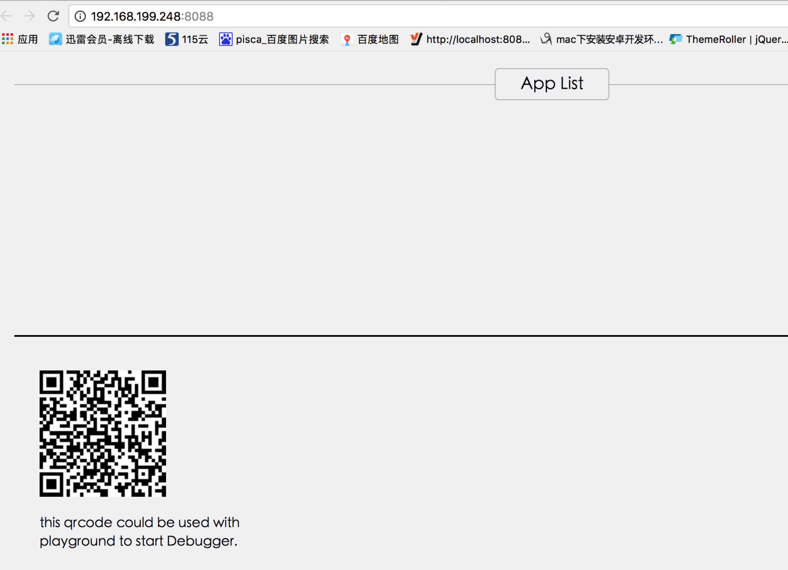
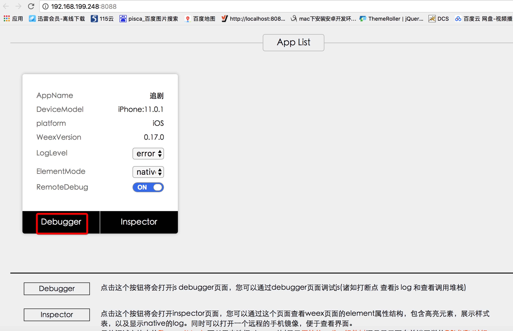
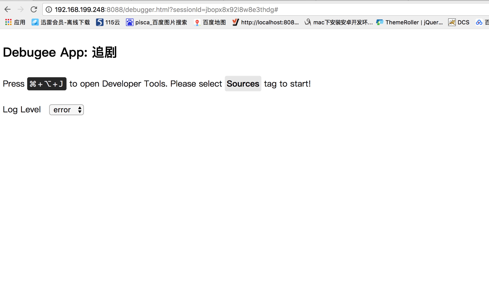
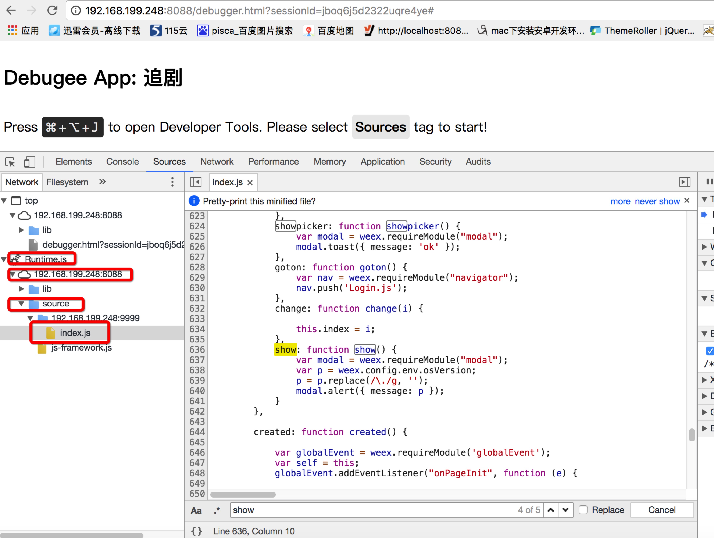

调试
控制台 weex debug
此时会弹出浏览器，如下图
假设此时你的原生环境已经没问题了，那么先安装一次app，假设你现在需要调试src/index.vue并且ip也是如上ip， 那么此时要调试的编译后的js地址就是http://192.168.199.248:9999/index.js,http://192.168.199.248:9999/对应项目下的dist目录，src/index.vue编译后就会在dist下生成index.js，好了现在把http://192.168.199.248:9999/index.js生成二维码，打开app，点击设置->扫描二维码，这时app内部就得到了debugip,然后设置->开启debug，如果顺利界面变成如下样子
点击debugger进入调试界面（此时界面会重新刷新一次，如果你自己接入的sdk，把开启debug卸载application里面，那么界面非要在你点了debugger之后才出来，哎，又是一个踩过的坑），如果你有过浏览器js调试经验，那么剩下的就跟那完全一样了，为了讲清楚，我继续截图
我第一次见这界面也愣住了，不知道怎么继续，你应该这么做，如果是windows就按f12 ，mac cmd+alt+i ,其实就是打开浏览器调试模式，也许你的快捷键不是这个，那样就自行百度吧，接着我告诉你要调试的js在哪
由于是编译后的js，最快的找到业务代码的方法就是搜索，剩余的就是打断点调试了